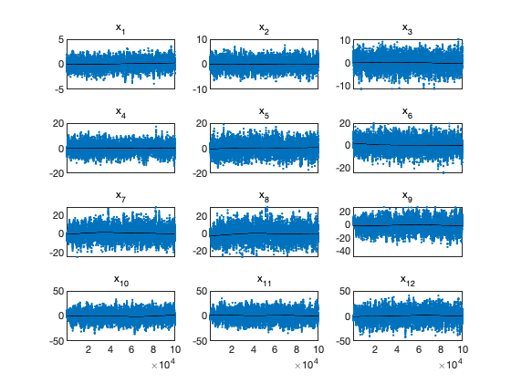
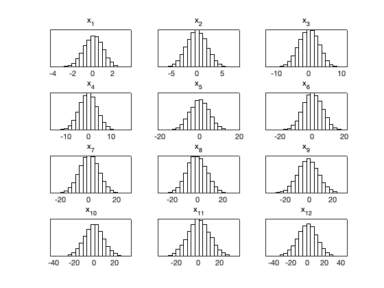
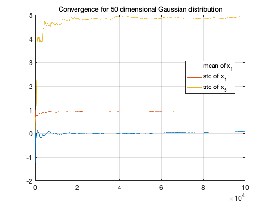

MCMC toolbox » Examples » 50 dimensional Normal distribution
Test I: 50 dimensional Gaussian
clear model options params nsimu = 100000; % how many simulations npar = 50; % generate correlated covariance matrix with increasing variances s = (1:npar)'; ci = inv(cov2cor(covcond(10,ones(npar,1))).*(s*s')); model.ssfun = @(x,d) x(:)'*ci*x(:); options.nsimu = nsimu; options.method = 'am'; options.qcov = eye(npar)/npar*2.4^2.; options.adaptint = 1000; for i=1:npar, params{i} = {sprintf('x_{%d}',i), 0}; end [res,chain] = mcmcrun(model,[],params,options);
Sampling these parameters:
name start [min,max] N(mu,s^2)
x_{1}: 0 [-Inf,Inf] N(0,Inf)
x_{2}: 0 [-Inf,Inf] N(0,Inf)
x_{3}: 0 [-Inf,Inf] N(0,Inf)
x_{4}: 0 [-Inf,Inf] N(0,Inf)
x_{5}: 0 [-Inf,Inf] N(0,Inf)
x_{6}: 0 [-Inf,Inf] N(0,Inf)
x_{7}: 0 [-Inf,Inf] N(0,Inf)
x_{8}: 0 [-Inf,Inf] N(0,Inf)
x_{9}: 0 [-Inf,Inf] N(0,Inf)
x_{10}: 0 [-Inf,Inf] N(0,Inf)
x_{11}: 0 [-Inf,Inf] N(0,Inf)
x_{12}: 0 [-Inf,Inf] N(0,Inf)
x_{13}: 0 [-Inf,Inf] N(0,Inf)
x_{14}: 0 [-Inf,Inf] N(0,Inf)
x_{15}: 0 [-Inf,Inf] N(0,Inf)
x_{16}: 0 [-Inf,Inf] N(0,Inf)
x_{17}: 0 [-Inf,Inf] N(0,Inf)
x_{18}: 0 [-Inf,Inf] N(0,Inf)
x_{19}: 0 [-Inf,Inf] N(0,Inf)
x_{20}: 0 [-Inf,Inf] N(0,Inf)
x_{21}: 0 [-Inf,Inf] N(0,Inf)
x_{22}: 0 [-Inf,Inf] N(0,Inf)
x_{23}: 0 [-Inf,Inf] N(0,Inf)
x_{24}: 0 [-Inf,Inf] N(0,Inf)
x_{25}: 0 [-Inf,Inf] N(0,Inf)
x_{26}: 0 [-Inf,Inf] N(0,Inf)
x_{27}: 0 [-Inf,Inf] N(0,Inf)
x_{28}: 0 [-Inf,Inf] N(0,Inf)
x_{29}: 0 [-Inf,Inf] N(0,Inf)
x_{30}: 0 [-Inf,Inf] N(0,Inf)
x_{31}: 0 [-Inf,Inf] N(0,Inf)
x_{32}: 0 [-Inf,Inf] N(0,Inf)
x_{33}: 0 [-Inf,Inf] N(0,Inf)
x_{34}: 0 [-Inf,Inf] N(0,Inf)
x_{35}: 0 [-Inf,Inf] N(0,Inf)
x_{36}: 0 [-Inf,Inf] N(0,Inf)
x_{37}: 0 [-Inf,Inf] N(0,Inf)
x_{38}: 0 [-Inf,Inf] N(0,Inf)
x_{39}: 0 [-Inf,Inf] N(0,Inf)
x_{40}: 0 [-Inf,Inf] N(0,Inf)
...
iii = 1:12; figure(1); clf; mcmcplot(chain,iii,res); figure(2); clf; mcmcplot(chain,iii,res,'hist',20); figure(3); clf cummean = @(x) cumsum(x(:))./(1:length(x))'; cumstd = @(x) sqrt(cummean(x.^2) - cummean(x).^2); plot(1:options.nsimu,cummean(chain(:,1)),'-') hold on plot(1:options.nsimu,cumstd(chain(:,1)),'-') plot(1:options.nsimu,cumstd(chain(:,5)),'-') hold off grid legend({'mean of x_1','std of x_1','std of x_5'},'location','best') title('Convergence for 50 dimensional Gaussian distribution')  